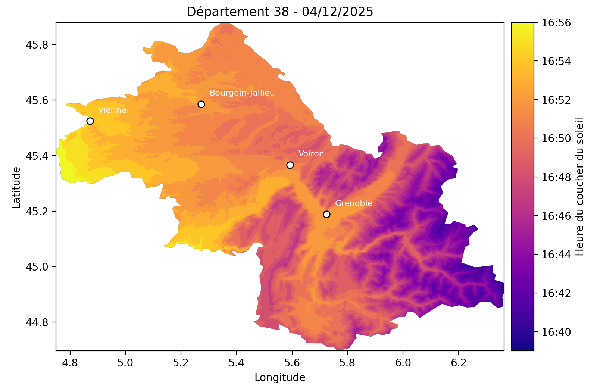

SunCast - Calcul et visualisation haute résolution des heures de lever et coucher du soleil
HPC, calcul parallèle, OpenMP, Slurm, C++, Python, solaire, lever du soleil, coucher du soleil, DEM, modèle numérique d’élévation, Parquet, GDAL, géospatial, topographie
1 Introduction
SunCast est un pipeline de calcul haute performance (HPC) qui génère des données solaires géoréférencées (heures de lever et coucher du soleil) pour des territoires français. Le projet combine efficacement :
- Un calculateur C++ optimisé avec OpenMP pour le parallélisme sur mémoire partagée (jusqu’à 96 cœurs par tâche)
- Une orchestration Python pour la gestion des données et la génération de formats Parquet partitionnés
- Une intégration Slurm pour le déploiement sur clusters HPC via des job arrays
Le pipeline traite des modèles numériques d’élévation (DEM) départementaux pour calculer les heures solaires en tenant compte de la topographie locale, avec un stockage efficace en format Parquet (1,2).
2 Contexte et problématique
Les heures de lever et coucher du soleil varient en fonction de la topographie locale, créant des ombres portées qui influencent l’ensoleillement réel d’un point géographique. Ces informations sont cruciales pour :
- Les applications d’énergie solaire : optimisation du placement de panneaux photovoltaïques
- L’agriculture de précision : planification des cycles de culture
- Les études climatiques : analyse de l’exposition solaire sur de vastes territoires
Le principal défi réside dans le volume de calcul massif : pour un territoire comme un département français, il faut calculer les heures solaires pour chaque pixel d’un raster haute résolution (plusieurs millions de pixels) sur une année complète (365 jours), tout en intégrant les effets topographiques. Cette complexité nécessite une approche HPC optimisée (3).
3 Données
L’étude s’appuie sur plusieurs sources de données géospatiales :
3.1 Modèles Numériques d’Élévation (DEM)
Les DEM utilisés dans ce projet proviennent du programme Copernicus (4). Ces rasters haute résolution fournissent l’altitude de chaque pixel du territoire étudié, permettant de calculer les ombres portées par la topographie.
- Format : GeoTIFF
- Projection : WGS84 (EPSG:4326)
- Résolution : Variable selon les données source
3.2 Limites administratives
Les limites des départements français proviennent des données IGN (Institut National de l’Information Géographique et Forestière), permettant de découper les DEM par département pour un traitement parallélisé.
- Format : Shapefile
- Projection : WGS84 (EPSG:4326)
3.3 Départements Cibles
La configuration actuelle traite trois départements alpins :
- 38 : Isère
- 73 : Savoie
- 74 : Haute-Savoie
Cette liste est configurable dans src/config.py.
4 Approche et méthodologie
4.1 Architecture du pipeline
Le pipeline suit une approche en trois étapes :
4.1.1 1. Préparation des données
Les DEM départementaux sont extraits du raster source à l’aide de gdalwarp ou rasterio :
python -m src.data.process_demCette étape génère un fichier dem_dept_XX.tif pour chaque département dans data/processed/.
4.1.2 2. Calcul solaire
Le calculateur C++ lit chaque DEM départemental et calcule, pour chaque pixel et pour chaque jour de l’année :
- Heure de lever du soleil (en minutes après minuit)
- Heure de coucher du soleil (en minutes après minuit)
Ces calculs intègrent :
- La position géographique (latitude/longitude de chaque pixel)
- L’équation du temps et la déclinaison solaire (5)
- Les ombres portées par la topographie environnante
4.1.3 3. Stockage en Parquet
Les résultats sont écrits en streaming dans des fichiers Parquet partitionnés par département :
data/parquet/
├── dept=38/
│ ├── data.parquet
│ └── metadata.json
├── dept=73/
│ └── ...
└── dept=74/
└── ...Chaque fichier Parquet contient trois colonnes :
day(int32) : Jour de l’année (1-365)sunrise(list[int16]) : Tableau des heures de lever pour tous les pixelssunset(list[int16]) : Tableau des heures de coucher pour tous les pixels
4.2 Parallélisation multi-niveau
Le projet exploite une double parallélisation :
Niveau 1 - Parallélisme sur mémoire partagée (OpenMP)
À l’intérieur de chaque tâche, le code C++ utilise OpenMP pour distribuer le calcul sur 96 threads, exploitant tous les cœurs d’un nœud HPC (3).Niveau 2 - Parallélisme sur tâches distribuées (Slurm)
Chaque département est traité par une tâche Slurm indépendante via un job array, permettant de paralléliser au niveau du cluster (6).
4.3 Intégration HPC avec Slurm
Le script submit_job.slurm configure le déploiement sur cluster :
#!/bin/bash
#SBATCH --job-name=SunCast_solar
#SBATCH --array=0-2
#SBATCH --cpus-per-task=96
#SBATCH --time=04:00:00
python -m src.solar.run_solar_parquet --index $SLURM_ARRAY_TASK_IDChaque tâche du job array traite un département différent en utilisant l’index SLURM_ARRAY_TASK_ID pour sélectionner le bon département dans la configuration.
5 Technologies utilisées
Le projet s’appuie sur un stack technologique robuste :
| Catégorie | Outils |
|---|---|
| Calcul C++ | C++17, OpenMP, GDAL |
| Orchestration | Python 3.8+, pandas, NumPy, rasterio |
| Stockage | PyArrow, Parquet (compression Snappy) |
| Visualisation | Matplotlib, GeoPandas |
| HPC | Slurm, job arrays |
| Build | CMake 3.15+, gcc/clang avec support C++17 |
6 Performances
Les optimisations du pipeline permettent d’atteindre des performances élevées :
- OpenMP : Parallélisation sur 96 threads par tâche
- Compilation optimisée :
-O3 -march=native - Streaming binaire : Communication directe C++ → Python sans fichiers intermédiaires
- Format Parquet : Compression efficace (Snappy) et lecture sélective
Pour un département de taille moyenne (~2 millions de pixels), le temps de calcul est de l’ordre de quelques minutes sur un nœud 96 cœurs.
7 Exemple
 Figure 1 : Heure du coucher de soleil dans le département de l’Isère (38) le jeudi 4 décembre 2025.
{kind=link}
8 Difficultés et leçons apprises
Le développement de SunCast a mis en lumière plusieurs défis techniques :
8.1 1. Gestion de la mémoire pour grandes grilles
Le traitement de rasters haute résolution (plusieurs millions de pixels × 365 jours) génère des volumes de données importants. L’approche de streaming binaire entre C++ et Python a permis d’éviter l’écriture de fichiers intermédiaires volumineux, réduisant ainsi l’empreinte disque et le temps I/O.
8.2 2. Synchronisation du pipeline
L’utilisation de subprocess.Popen avec des pipes nécessite une gestion rigoureuse du flux de données pour éviter les blocages. La lecture exacte du nombre d’octets attendus (read_exact) garantit la cohérence entre le producteur (C++) et le consommateur (Python).
9 Lien vers le projet
Le code source est accessible sur GitHub : https://github.com/NCSdecoopman/SunCast
10 Cas d’usage et perspectives
10.1 Cas d’usage actuels
- Énergie solaire : optimisation du placement de panneaux photovoltaïques en montagne
- Glaciologie : étude de la fonte nivale en fonction de l’exposition solaire
- Agriculture : planification des cultures en fonction de l’ensoleillement
10.2 Perspectives d’évolution
- Extension géographique : traitement de l’ensemble des départements français
- Résolution temporelle : calcul horaire au lieu de quotidien pour des applications temps réel
- Résolution géographique : l’objectif est de descendre à une résolution de 5 m au lieu de 90 m actuellement.
- Optimisation GPU : portage du calculateur sur CUDA pour architectures hybrides CPU/GPU
- API de requête : service web pour interroger les données Parquet de manière interactive